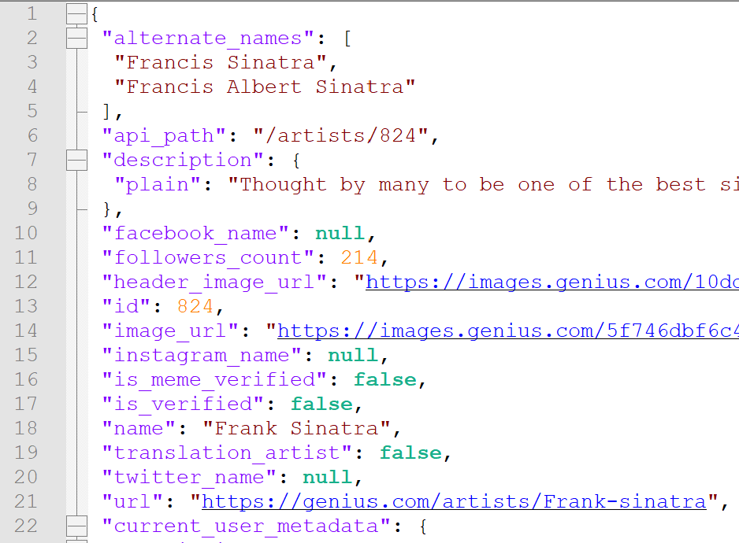
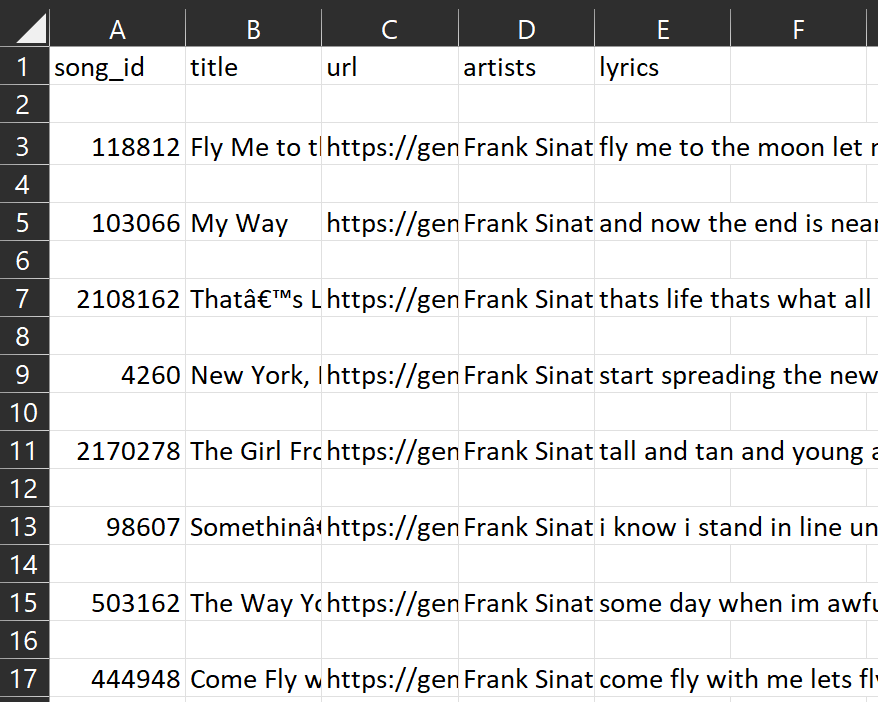

08-26-2022
A walk-through of how I gathered the data for this project and how I created & trained
the model.
When creating a project such as this, the first task at hand is to gather all necessary data, and clean it. Luckily for me, there are numerous methods to collect lyric data off of websites, a process called web-scraping. In order to scrape the lyrics, you can use one of two methods:
The first method of getting each song's lyric page's html content
and then parsing through to find and store just the lyrics, is
as tedious as it sounds. The second method of using an API
is far more simpler. Albeit, an API usually requires some sort of
subscription/access key which can only be obtained by signing
up at the host's website.
In this project, I opted to use a website called Genius's API
to scrape Mr. Sinatra's lyrics.
Genius is a website where users can upload explanations
to any song's lyrics. The explanations can then be voted on
by other users. The Genius API allows registered users to
interact with the sites functionalities, one of which includes
getting the lyrics.
Below you can see the snippet of code I used to retrieve and
save all the related lyrics. Mind you, this code should work
for any singer that is on Genius.com, you just have to spell
the name right. The "GENIUS_ACCESS_TOKEN" refers to the
passcode that allows me to interact with the Genius API. It
is obtained by registering on the website.
 As you can see on the right, the downloaded lyrics were saved in a JSON file that was too long to be human-readable. So, I decided to parse through this JSON file, and make it more human-friendly by converting it into a simple CSV file.
Parsing through the JSON and creating a CSV of just the relevant information
took an entire script on its own. In fact, the main reason it took an entire day,
as well as multiple iterations was because of the JSON data.
You see, the JSON data, direct from the API, was faulty and unclean. The
lyric's data, as well as each song's metadata was filled with unwanted, non-parseable,
and non-human-readable characters. In order to tackle this problem, I had to
iterate through each song, and remove any unwanted characters. As you can
see from my code snippet below, the API returned a tremendous amount of unique
unwanted characters.
The punctuations were optional to remove, as certain
character-level RNN models treat those as tokens. However, I wanted to remove
punctuation, as songs lyrics contained periods and commas at most.

With my lyrics-cleaning done, I finally had my cleaned CSV file, which you can
see on the left. I had decided to keep certain metadata about each song, as it
might come into use for another project (perhaps to create a song title generator).
Mind you, the way I have this project set up in the GitHub repo, you can replace the artist's name
with any artist you want, and at the end you will have a fully trained RNN lyrics generator for that
artist.
All that was left was to iterate through my CSV file, and create a simple text file of ONLY the lyrics which I can load into my RNN script. ALAS, I was finally done with just gathering and cleaning the data.
For all RNN character-level text generation models, the process is generally the same. Assuming we have cleaned data at the ready, all we have to do is:
Now we can focus on creating and training the actual model itself.
We need to first define the embedding dimension as well as the number of RNN units (GRUs - Gated Recurrent Units) before we can define the LyricsGeneratorModel class.
As a sanity check, we can see the next-char predictions of the untrained model:
We get the following output:
Input: b's i see soon begins bewitching me its that old devil moon that you stole from the skies its that old'
Next char predictions:
b't[UNK]vtbpszf nqycgt uwweyzryjcxsdeiqqag uo fobxzqmqqsxmmv lxxbvizzmuubptzikawishqnlp lntuwxgnwud[UNK]maqlrp'
Finally, we can choose a loss function, and train our model.
In my case, I chose to go with 80 epochs of training. I believe that this led to my model being over-fit, as you can notice when you play with the deployed version. Sometimes, the sentences generated are too accurate, and even spot on with Mt. Sinatra's most famous lyrics (im looking at you 'Fly me to the moon'!).
Over the 80 epochs, as you can see below, the lowest training loss I achieved was only 0.09. This definitely indicates an over-fit model.
I have definitely over-fit this model. If I were to train again, I would go for both less model complexity and less training epochs.
As for the data. Next time would be a great time to further clean the data itself. Perhaps create a word-level RNN lyrics generator instead of a character-level one.
With the way I have the CSV file structured, I would even be able to train another RNN solely to generate a song title in the like of Frank Sinatra. That would make for a really nice, complete webapp.
For now, you can visit the webapp and the entire code repository, linked below.